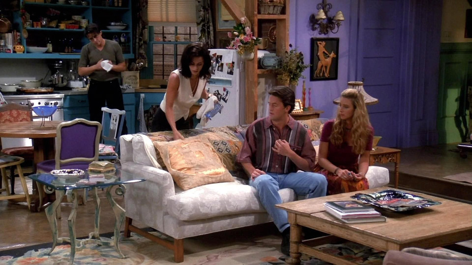
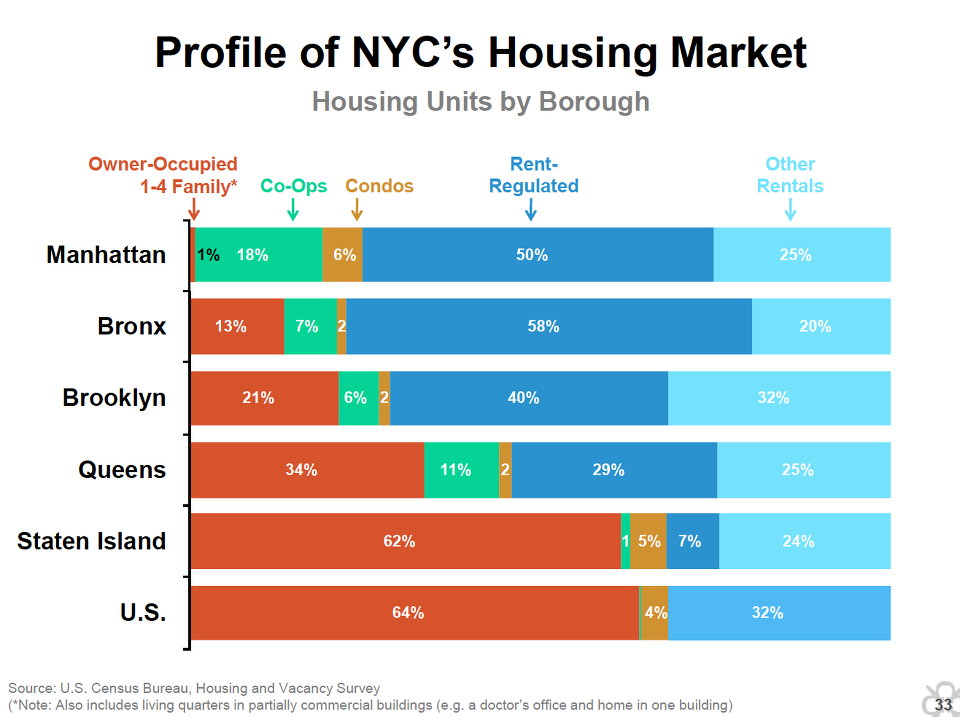
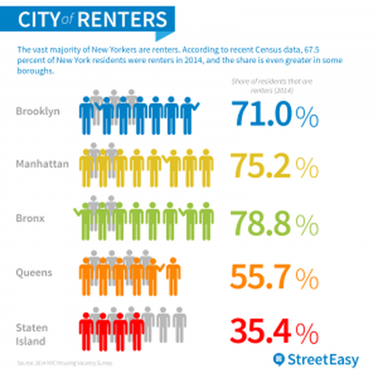

모니카는 어떻게 뉴욕 아파트 월세를 감당했을까 ?
게시: 2018-09-23T19:27:16+09:00

1990년대 후반부터 2000년대 초반까지 엄청난 인기몰이를 했던 "Friends"는 우리나라 무한도전급의 인지도를 자랑하는 시트콤이었습니다. 2000년대 중에 아직도 기억이 나는 어느 미국 신문 투고란에 '난 전형적인 여피족의 삶을 살았다'라는 의미로 'TV에서는 프렌즈를 시청했다'라는 묘사를 쓴 글이 올라왔던 것이 기억날 정도입니다. 많은 분들께는 굳이 그 배역과 극중 상황에 대한 설명이 필요없을 것입니다만, 모니카와 레이첼, 피비와 조이 등 이 다섯 친구들은 뉴욕의 꽤 넓은 (제 느낌으로는 한 45평 ?) 아파트에서 일종의 쉐어하우스 형태로 살고 있었습니다. 그런데 뉴욕이나 런던 등의 소득대비 주거비로 볼 때 서울 아파트값이 결코 비싼 편이 아니며 오히려 싼 편에 속한다고 하지요. 그에 따르면 뉴욕 아파트 월세는 엄청난 고소득자가 아니면 감당이 안 되어야 합니다. 하지만 모니카는 그저그런 요리사이고, 피비는 안마사, 조이는 삼류 단역 배우, 레이첼은 웨이트리스 등 최저임금에 가까운 소득자들입니다. 어떻게 된 것일까요 ? 설정이 잘못 된 것일까요 ?
아닙니다. 뉴욕은 그 살인적인 주거비 문제를 해결하기 위해 rent-controlled 거주지와 rent-regulated 거주지라는 제도를 운영하고 있습니다. 두 제도는 서로 약간 다릅니다만, 그냥 한줄 요약하면 임차인 보호 제도입니다. 임차인이 규칙 잘 지키고 월세만 꼬박꼬박 잘 내면 언제까지고 그 아파트에서 살 수 있을 뿐만 아니라, 월세도 인상폭이 엄격하게 제한되어 있습니다. 이렇게 매년 매우 조금씩 오르는 월세가 2700달러(우리 돈으로 약 300만원)에 달하면 그 주거지는 이런 보호 제도에서 벗어나 집주인이 마음대로 월세를 책정할 수 있게 됩니다. 임차인에게 엄청나게 유리한 rent-controlled는 이제 거의 사라진 제도이지만, 그에 못지 않게 임차인을 보호해주는 rent-regulated 거주지는 아직도 많습니다. 뉴욕 임대 주택 중 약 절반 정도가 아직도 rent-regulated 거주지로 되어 있습니다.


프렌즈에서도 모니카의 할머니가 이 rent-controlled 거주지로 지정된 아파트에서 모니카와 함께 살다가 돌아가셨고, 그에 따라 모니카가 그 임차인 권리를 승계하여 상당히 적은 월세로 그 아파트에서 사는 것으로 나옵니다. 그나마 모니카는 그 월세도 내기가 버거워 친구들에게 일부 방을 재임대(subletting)하는 형태로 해서 쉐어하우스 시트콤이 탄생한 것이지요. 그거 일종의 불법이고, 그게 적발되면 모니카는 거주권을 읽고 쫓겨날 수도 있는 것이었고, 실제로 시트콤 에피소드 중 하나가 그에 얽힌 소동을 다룬 것이었다고 합니다.
실은 최근에 어떤 분과 점심 식사를 하다가 고삐 풀린 집값 문제 이야기가 나왔고, 이 분이 주택 문제 해결 방안에 대해서 이야기하셨는데, 그 내용이 제가 듣기에는 굉장히 신박했습니다.
이 분의 아이디어를 한줄 요약하면 '전세든 월세든 10년 거주 보장 및 연간 인상률을 물가인상률과 연동'입니다.
- 현재는 전세라고 해도 2년까지만 보장됩니다.
- 그러다보니 주택 가격 추이에 따라 2년마다 전세 가격도 올라가고, 서민들의 안정적인 주거가 위협받습니다.
- 이는 역으로 주택 매매가격에도 영향을 줍니다.
- 그러니 전세를 10년간 보장하고, 매년 전세금 인상률을 연간 물가인상률에 연동시켜 제한하면 서민들은 구태어 내집 마련에 연연하지 않아도 됩니다.
- 이럴 경우 집주인들이 모두 전세를 월세로 전환하려 할 것이니, 전세월세 상관없이 모두 10년 보장, 인상률 연동으로 해야 합니다.
- 특히 10년으로 하면, 전세를 살더라도 인테리어 공사 등에 임차인도 투자할 수 있습니다.
- 물론 집주인에게는 재산권 행사 제한이 있는 것 아니냐는 반론이 있을 수 있는데, 어차피 상가 임대차법도 5년(향후 10년) 보장하니 비슷하게 가면 안 될 것 없습니다.
- 그리고, 그런 재산권 행사에 제한이 있는 것이 싫다면, 자기 거주 주택 외에는 팔면 됩니다.
제가 들어보니, 이건 집값 안정화 대책이라기보다는 서민 주거 안정화 대책에 해당합니다. 하긴 제가 볼 때 시장에서 움직이는 집값은 정부가 뭔 짓을 해도 잡을 방법이 없습니다. 그러니 집값 잡는 건 포기하고, 그냥 서민 주거 안정화 방안을 내놓는 것이 더 좋을 듯 합니다.
원래 위 내용을 제 페북에 올려놓았더니, 몇 분께서 저 방안의 헛점에 대해 지적을 해주셨어요. 정리해보니 크게 4가지더군요.
1) 처음 혜택을 받는 사람은 좋겠으나 일단 10년이 지나고 난 이후의 전월세 가격은 제어가 안 될 것이다
2) 장기 임대는 필연적으로 집주인의 주택 관리 소홀로 이어져 거주지의 질적 저하를 불러올 것이다
3) 우리나라 전세 특성상 자기 집을 전세로 내놓고 일단 자기도 전세 살다가 나중에 자기 소유 주택으로 입주하려는 집주인이 많은데 그건 어떻게 할 것인가 ?
4) 사유재산 이용을 지나치게 제한하는 것이므로 위헌 소지가 크다
맞는 말씀들이라고 생각되어 해외에서는 어떻게 하고들 있나 구글링을 해본 결과 알게 된 것이 뉴욕시와 독일의 임차인 보호 제도였습니다. 오히려 거기서는 10년이 아니라 평생을 그렇게 살 수 있도록 보호가 되더군요. 프렌즈의 모니카처럼 평생이 아니라 아예 대를 이어 사는 것도 종종 있는 일이라고 합니다. 미국이나 독일과 같은 자본주의 국가에서도 운영하는 제도이니 헌법 재판을 해도 딱히 불리할 것 같지는 않습니다. 결국 1번과 4번 문제는 별 문제가 아니라고 봅니다
저는 오히려 2번 문제는 장기 임대가 더 좋은 방향으로 나가지 않을까 생각합니다. 가령 저의 경우엔 전세를 사는 것에 대해 별 불만이 없었으나, 낡은 아파트를 확 뜯어고쳐 인테리어를 하고 싶어도 전세집에 그렇게 수천만원의 돈을 들이는 것이 손해라고 생각되어 안 하다가, 그럴 바에야 차라리 집을 사서 인테리어를 만족스럽게 해놓고 살자는 생각에 집을 산 경우거든요. 많은 전월세 가정에서는 낡은 창틀, 낡은 화장실에 불만이 많아도 '2년 후 비워줘야 하는 남의 집에 내가 왜 돈을 쓰나'라는 생각에 그냥 참고 사는 경우가 많습니다. 10년 이상으로 임대 기간을 보장해주면 오히려 세입자들이 돈을 내어 인테리어를 괜찮게 할 가능성이 더 높다고 저는 봅니다. (참고로 아무리 돈을 많이 들여 인테리어를 해봐야 집 매매 가격에는 전혀 영향을 주지 않는다고 하더군요. 저는 그 부분을 잘 이해를 못 했는데, 생각해보면 아파트 가격이란 주택 가격이라기 보다는 언젠가 허물고 더 높은 용적률로 재건축을 할 때의 대지지분의 가격에 불과하다 라는 설명을 듣고나니 다소 이해가 갔습니다.)
저는 오히려 3번 문제가 좀더 실질적인 문제가 되겠다고 생각했습니다. 실제로 많은 가구가 아마 저렇게 살고 있을 것이거든요. 가령 성북구에 40평대 아파트를 소유하고 계신 가정에서도 애가 고등학교 다니는 3년 동안만 성북구 아파트를 전세 놓고 그 전세금에 돈을 보태 대치동에서 전세살이를 하다가 아이가 고등학교 졸업하면 다시 성북구로 되돌아가는 그런 경우지요. 하지만 그 문제 역시, 1가구 1주택인 가구의 주택에 대해서는 그런 규제를 적용하지 않겠다고 하면 간단히 해결되지 않을까 합니다.
이런 제도가 들어서면 아마 아파트를 투자 대상으로 보고 투자를 했던 분들은 반발이 엄청날 것 같습니다. 그에 따라 아마 많은 부작용이 있을 것 같아요. 가령 법 시행 전에 미리 전월세 금액을 엄청나게 높여 받는다든지, 이면 계약에 의해 허위 임대차 계약을 한다든지 하는 일이 많을 것 같습니다. 또 이런 선의의 제도를 악용하여 선량한 집주인을 등쳐먹는 사기꾼 같은 임차인도 많이 생길 것 같고요. 하지만 이런 강력한 임대인 보호 정책 실시로 인해 발생할 가장 큰 문제는 그것이 전반적인 주택 건설 침체를 불러와 장기적인 주택 문제 악화를 가져올 수 있다는 점일 것입니다.
- 분명히 그런 제도는 시민들의 주택 소유 욕구를 깎을 것입니다. 안정적이고 싼 임대 주택이 있는데 구태여 집을 살 필요가 없으니까요.
- 더군다나 다주택을 보유한 집주인들은 골칫덩어리로 전락할 임대용 아파트를 팔아버리거나 아예 빈집으로 비워둘 가능성도 있습니다.
- 이런 모든 상황은 건설사의 신규 주택 사업 수익성을 떨어뜨릴 것입니다. 그 결과는 결국 공급 부족 및 주거 수준 질적 저하로 이어질 가능성이 큽니다.
- 항상 좋은 해외 뉴스를 전해주시는 SantaCroce님의 뉴욕의 임대료 상한제 관련글 https://m.blog.naver.com/santa_croce/220997246462 에서도, 진보 보수 양측의 모든 경제학자들이 같은 이유로 뉴욕의 임차인 보호 정책에 대해 부정적인 입장을 가지고 있다고 하더군요.
그럼에도 불구하고 저는 위와 같은 강력한 전월세 보호 규제는 시행하는 것이 맞다고 생각합니다. 법률과 규제 등은 함무라비 법전처럼 돌에 새긴 금과옥조가 아닙니다. 변화하는 사회를 반영하기 위해 끊임없이 도전받고 재검토되고 수정되는 것입니다. 심지어 성령께서 한글자 한글자 불러주시어 완성되었다는 성경책조차도 상황과 세태에 따라 과거에는 허락되던 것이 지금은 허락되지 않는다는 것을 인정합니다. 가령 예수님이 이혼을 금한다고 말씀하시자, 사람들이 '아니 모세가 율법에 허락한 것을 왜 금하느냐'라고 묻자 예수님께서는 '그때는 사람들 성정이 못되어 어쩔 수 없이 허락했지만 이제는 아니란다'라고 말씀하시지요.
(마 19:7) 여짜오되 그러면 어찌하여 모세는 이혼 증서를 주어서 버리라 명하였나이까
(마 19:8) 예수께서 이르시되 모세가 너희 마음의 완악함 때문에 아내 버림을 허락하였거니와 본래는 그렇지 아니하니라
지금처럼 아파트가 주거용보다는 투자용 자산으로 인식되어 부동산이 과열되고 서민 주거권이 위협받는 상황에서는 강력한 규제를 통해 그런 투자 열기를 잠재울 필요가 분명히 있습니다. 그리고 정부가 해야 하는 일이 바로 그런 것입니다. 나중에 부동산 경기가 지나치게 냉각되면 그때 가서 적절한 조치, 가령 향후 지어지는 신규 주택에 대해서는 그런 규제를 적용하지 않는다라든가 하는 완화 조치를 발표해도 될 것입니다. 세상에 완벽한 법이나 제도는 없습니다. 그걸 운용하는 국민과 정부가 유연성을 발휘하는 것이 더 중요하다고 봅니다.
이런 정책이 임대업자의 수익성 악화와 몰락으로 이어져 결국 민간 임대주택 공급 감소로 이어진다는 점을 지적할 수도 있을 것입니다. 저는 거기에 대해서는 좀 회의적입니다. 기존 임대업자들이 임대업을 폐업하고 집을 내놓으면 그건 결국 싼 값에 내집마련을 할 기회를 서민층에게 주게 될테니까요. 오히려 진짜 여유있는 투자자들은 아예 다주택을 빈집으로 비워둘 가능성이 있고, 또 실제로 영국 런던 등에서는 그런 식의 빈 주택도 많다고 들었습니다만, 그런 빈집에 대해서는 징벌적 세금을 과세하는 것도 가능하니 큰 문제가 될 것 같지는 않습니다.
** 이상 부동산에 대해 잘 모르는 비전문가의 잡담이었습니다. 반말과 욕설만 안 하시면 헛점을 마음껏 비웃으셔도 됩니다. 다 그러면서 한두가지씩 배우는 것이라고 생각합니다.
** 독일 임차인 보호 제도를 경험하고 칭송하는 영국인의 경험담에 대해서는 아래 기사를 참조하세요.
** 뉴욕 및 독일의 임차인 보호 제도의 좋은 부분 뿐만 아니라 안 좋은 면에 대해서도 다룬 글로는 아래 글을 참조하세요. SantaCroce님의 블로그입니다. 한글입니다. 항상 좋은 글 공짜로 읽게 해주시는 점에 대해 이 기회를 빌어 SantaCroce님께 감사드립니다. 늘 건강하세요.
https://m.blog.naver.com/santa_croce/221109378966
https://m.blog.naver.com/santa_croce/220997246462
기타
source : https://www.nytimes.com/2018/05/20/nyregion/new-york-landlord-tenant-rights.html
https://ny.curbed.com/2017/8/28/16214506/nyc-apartments-housing-rent-control
https://www.ft.com/content/7e682660-1019-11e5-bd70-00144feabdc0
https://gamefaqs.gamespot.com/boards/225-television-broadcast-tv/70524248
https://news.joins.com/article/22604573